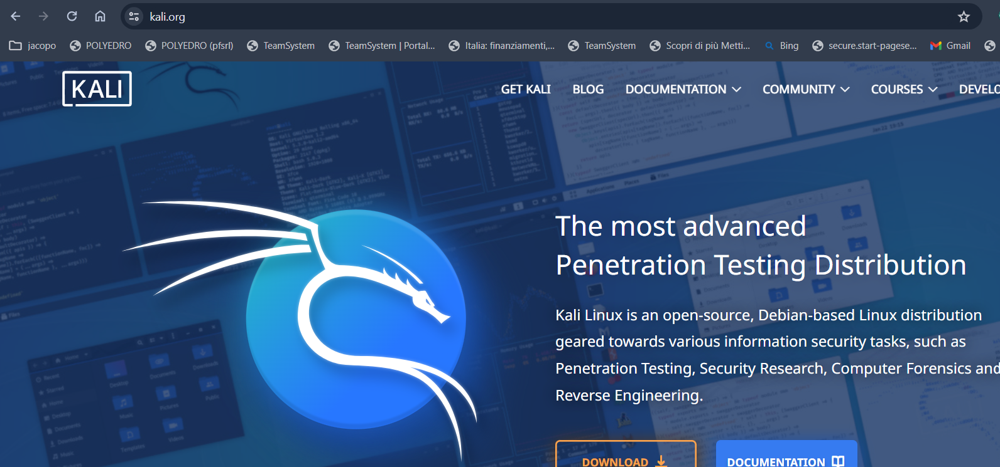
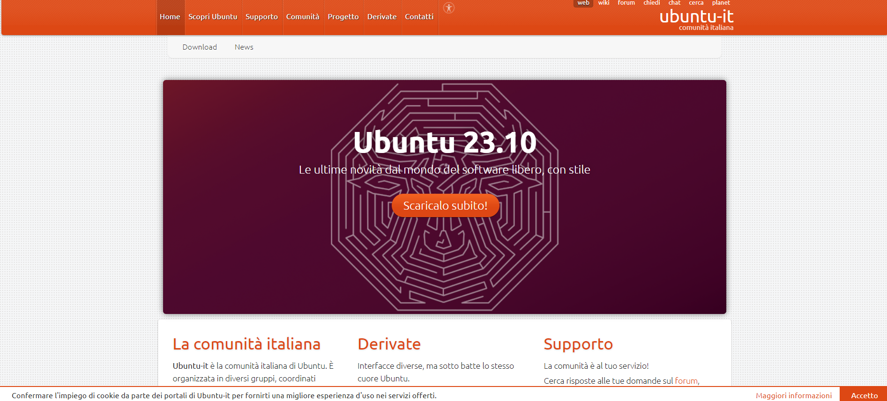

Per scaricare la distribuzione che abbiamo scelto, abbiamo bisogno di un browser web. si possono usare tutti i browser web cioè Google Chrome, microsoft edge etc...... dopo che abbiamo scelto il browser andiamo a vedere il secondo punto
adesso andremmo a cercare il sito della distribuzione ad esempio kali linux
 basta cliccare su Scarica/download in base alla lingua del computer
cercare una chioavetta di massimo 8gb di capienza
Ti lascio il link per scaricarli tutti e 2
Rufus